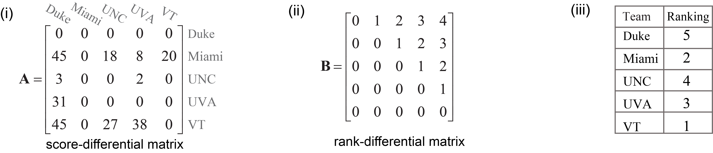

Ranking by Reordering
The problem of ranking a set of objects is ubiquitous not only in everyday life, but also for many scientific problems such as information retrieval, recommender systems, natural language processing, and drug discovery. This problem can be formulated as a 2-sided permutation Procrustes with single transformation.
Permutation Procrustes 2-Sided with Single-Transformation
Given matrix \(\mathbf{A}_{n \times n}\) and a reference \(\mathbf{B}_{n \times n}\), find a permutation of rows/columns of \(\mathbf{A}_{n \times n}\) that makes it as close as possible to \(\mathbf{B}_{n \times n}\), i.e.,
\begin{equation} \underbrace{\text{min}}_{\left\{\mathbf{P} \left| {p_{ij} \in \{0, 1\} \atop \sum_{i=1}^n p_{ij} = \sum_{j=1}^n p_{ij} = 1} \right. \right\}} \|\mathbf{P}^\dagger \mathbf{A} \mathbf{P} - \mathbf{B}\|_{F}^2 \\ \end{equation}
The code block below, we use the procrustes library to rank five American collegiate football teams, where each team plays one game against every other team, using their score-differentials as summarized below (data taken from A. N. Langville, C. D. Meyer, Ranking by Reordering Methods, Princeton University Press, 2012, Ch. 8, pp. 97–112). Here, each team is given a zero score for a game they lost (e.g., Duke lost to every other team) and the score difference is calculated for games won
(e.g., Miami beat Duke by 45 points and UNC by 18 points). These results are also summarized in the square score-differential matrix \(\mathbf{A}\) in Fig (i).
Team |
Duke |
Miami |
UNC |
UVA |
VT |
|---|---|---|---|---|---|
Duke |
0 |
0 |
0 |
0 |
0 |
Miami |
45 |
0 |
18 |
8 |
20 |
UNC |
3 |
0 |
0 |
2 |
0 |
UVA |
31 |
0 |
0 |
0 |
0 |
VT |
45 |
0 |
27 |
38 |
0 |
Before applying Procrustes, one needs to define a proper target matrix. Traditionally, the rank-differential matrix has been used for this purpose and is defined for \(n\) teams as,
\begin{equation} \mathbf{R}_{n \times n} = \begin{bmatrix} 0 & 1 & 2 & \cdots & n-1 \\ & 0 & 1 & \cdots & n-2 \\ & &\ddots &\ddots & \vdots \\ & & & \ddots & 1 \\ & & & & 0 \end{bmatrix} \end{equation}
The rank-differential matrix \(\mathbf{R} \in \mathbb{R}^{n \times n}\) is an upper-triangular matrix and its \(ij\)-th element specifies the difference in ranking between team \(i\) and team \(j\). Considering the rank-differential matrix in Fig. (ii) as the target matrix \(\mathbf{B}\), the two-sided permutation Procrustes finds the single permutation matrix that maximizes the similarity between the score-differential matrix \(\mathbf{A}\) and the rank-differential matrix \(\mathbf{B}\). This results to \([5,2,4,3,1]\) as the final rankings of the teams in Fig. (iii).
[1]:
# ranking by reordering with 2-sided permutation procrustes (with single transformation)
import numpy as np
from procrustes import permutation_2sided
# input score-differential matrix
A = np.array([[ 0, 0, 0 , 0, 0 ], # Duke
[45, 0, 18, 8, 20], # Miami
[ 3, 0, 0 , 2, 0 ], # UNC
[31, 0, 0 , 0, 0 ], # UVA
[45, 0, 27, 38, 0 ]]) # VT
# make rank-differential matrix
n = A.shape[0]
B = np.zeros((n, n))
for index in range(n):
B[index, index:] = range(0, n - index)
# rank teams using two-sided Procrustes
result = permutation_2sided(A, B, single=True, method="approx-normal1")
# compute teams' ranks (by adding 1 because Python's list index starts from 0)
_, ranks = np.where(result.t == 1)
ranks += 1
print("Ranks = ", ranks) # displays [5, 2, 4, 3, 1]
Ranks = [5 2 4 3 1]
The corresponding file can be obtained from:
Jupyter Notebook:
Ranking_by_Reordering.ipynbInteractive Jupyter Notebook: